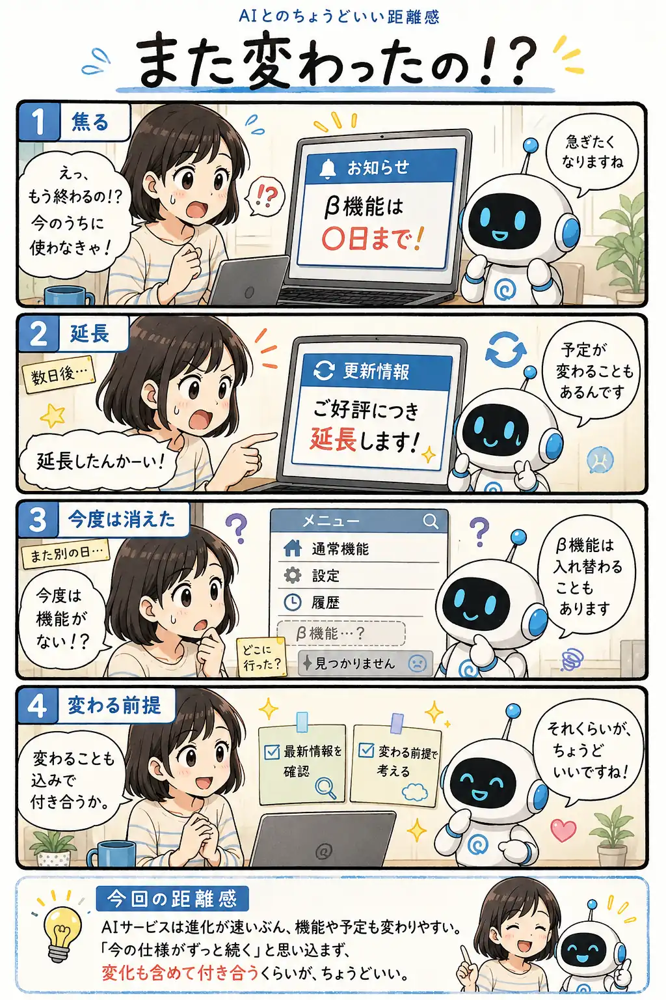

#066
また変わったの！？
昨日の予定が、今日には変わることも。

メモ
AIサービスは、とても速いスピードで進化しています。そのため、新機能が追加されたと思ったら終了したり、終了予定が延長されたりと、方針が短期間で変わることも珍しくありません。
こうした変化は品質向上のためでもありますが、利用者にとっては戸惑う場面もあります。
「今の仕様がずっと続く」と思い込まず、変化することも前提に運用や期待値を組み立てておくと、AIサービスと無理なく付き合いやすくなります。
今回の距離感
AIサービスは進化が速いぶん、機能や予定も変わりやすい。『今の仕様がずっと続く』と思い込まず、変化も含めて付き合うくらいが、ちょうどいい。